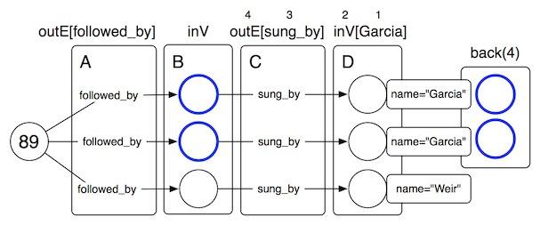

Many times its desirable to traverse a particular path and if some criteria is met along that path, then go back to the element from n-steps ago. Examples of such uses cases include:
- “What is the age of my friends who have friends who are older than 30 years old?”
- “What other products have my friends purchased who have also purchased a product of type X?”
g = TinkerGraphFactory.createTinkerGraph()The query below says, in plain English: “What are the ages of the people that know people that are 30+ years old?” The call to back('x') refers to the elements at step x that have paths up to the back('x') step (i.e. back to the V step). In the example below, back('x') “wraps” out('knows').has('age', T.gt, 30).
gremlin> g.V.as('x').outE('knows').inV.has('age', T.gt, 30).back('x').age
==>29A more complicated example is provided over the Grateful Dead graph diagrammed in Defining a More Complex Property Graph.
g = new TinkerGraph()
g.loadGraphML('data/graph-example-2.xml')The example query below states the following:
- get the song with id
89(Dark Star). - get all the songs that follow Dark Star in concert. (A)
- get the singers of those songs. (B)
- filter to only those songs that are sung by Jerry Garcia. (C)
- go back 2 steps to yield those songs that follow Dark Star and are sung by Jerry Garcia. (D)
- get the names of those songs that follow Dark Star and are sung by Jerry Garcia.
gremlin> g.v(89).out('followed_by').as('x').out('sung_by').has('name','Garcia').back('x').name
==>EYES OF THE WORLD
==>SING ME BACK HOME
==>MORNING DEW
==>HES GONE
==>CHINA DOLL
==>WHARF RAT
==>BROKEDOWN PALACE
==>TERRAPIN STATION
==>DEAL
==>ATTICS OF MY LIFE
==>COMES A TIME
==>STELLA BLUE
==>BERTHA
In order to determine how many steps to go back, the GremlinPipeline.toString() can be handy for displaying all the steps in an expression.
gremlin> println g.v(89).out('followed_by').out('sung_by').has('name','Garcia')
[StartPipe, OutPipe(followed_by), OutPipe(sung_by), PropertyFilterPipe(name,EQUAL,Garcia)]
==>nullNow, using the back step, notice how back('x') wraps 3 pipes prior to it. The name of the pipe in Pipes is BackFilterPipe.
gremlin> println g.v(89).out('followed_by').as('x').out('sung_by').has('name','Garcia').back('x').name
[StartPipe, AsPipe(x,OutPipe(followed_by)), BackFilterPipe([OutPipe(sung_by), PropertyFilterPipe(name,EQUAL,Garcia)]), PropertyPipe(name)]
==>null